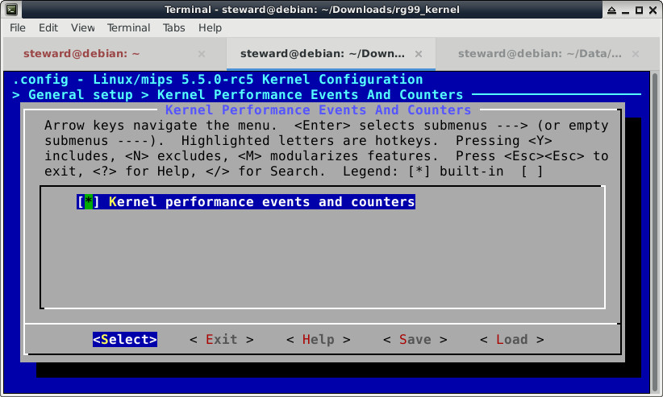

參考資訊：
http://coldoscar.blogspot.com/2018/06/perf-tool-for-mips-platform.html
Kernel

$ cd $ wget https://github.com/steward-fu/website/releases/download/rg99/bin_toolchain_rg99.tar.gz $ tar xvf src_toolchain_rg99.tar.gz $ sudo mv rg99 /opt/ $ export PATH=$PATH:/opt/rg99/usr/bin $ cd $ wget https://github.com/steward-fu/website/releases/download/rg99/src_perf.tar.gz $ tar xvf src_perf.tar.gz $ cd perf/tools/perf $ ARCH=mips CROSS_COMPILE=mipsel-linux- EXTRA_CFLAGS="-Wno-restrict -Wno-format-truncation -Wno-format-overflow -Wno-implicit-fallthrough -Wno-stringop-truncation -EL -I/opt/rg99/usr/include" LDFLAGS="-L/opt/rg99/usr/lib -Wl,-rpath=/opt/rg99/usr/lib" make